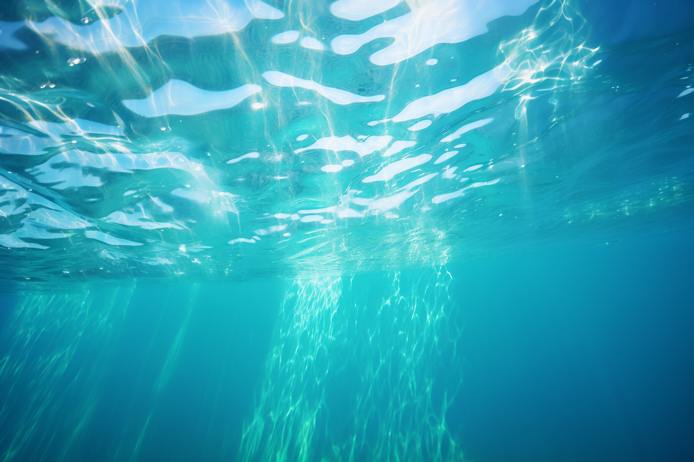

The oceanic pole of inaccessibility, also known as Point Nemo, is the point in the ocean that is farthest from any land. Located in the South Pacific Ocean, Point Nemo is approximately 1,450 nautical miles (2,688 kilometers) from the nearest landmass, which includes Ducie Island (part of the Pitcairn Islands), Motu Nui (near Easter Island), and Maher Island (off the coast of Antarctica). Named after Captain Nemo from Jules Verne's novel "Twenty Thousand Leagues Under the Sea," this remote spot is so isolated that the closest humans are often the astronauts aboard the International Space Station when it passes overhead, about 400 kilometers (250 miles) above Earth. Point Nemo's extreme remoteness makes it a fascinating subject for scientists studying ocean currents, marine biology, and the impact of human activity on the open ocean.
